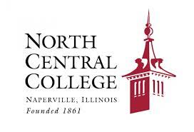

- Education
-
Michigan State University: East Lansing, MI PhD in Chemical Engineering
-
Nova Universidade de Lisboa: Lisbon, Portugal Erasmus Mundus Master in Membrane Engineering for a Sustainable World Focus: Biotechnology, Food, Health
-
 University of Montpellier: Montpellier, France Erasmus Mundus Master in Membrane Engineering for a Sustainable World Focus: Chemistry
University of Montpellier: Montpellier, France Erasmus Mundus Master in Membrane Engineering for a Sustainable World Focus: Chemistry -

North Central College: Naperville, IL Bachelor of Science in Chemistry Minor in Mathematics
- Honors and Awards
- Girls in Engineering 2021 Presenter
- Girls Math & Science Day 2021 Presenter
- Presenter at First Science Symposium ATOM hosted by Cumbres Veracruz Institute (2020)
- Education Merit Award for Excellence in Teaching: Exceptional Award (Spring 2019)
- MSU Research Enhancement Award (2019)
- Pi Mu Epsilon Honors Society
- NCUR 2018 Presenter
- NCC Rall Symposium Presenter (2018)
- Academic All-Conference (Basketball and Track, 2015- 2018)
- Liz Pearlman Perseverance Award (Basketball, 2018)
- CCIW 2nd Team All-Conference (Basketball, 2016 and 2018)
- NCC Offensive MVP (Basketball, 2016 and 2018)
- Team Captain (Basketball, 2017-2018)
- CCIW All-Conference (Track & Field, 2016 and 2018)
- CCIW Player of the Week (Basketball, 2016)